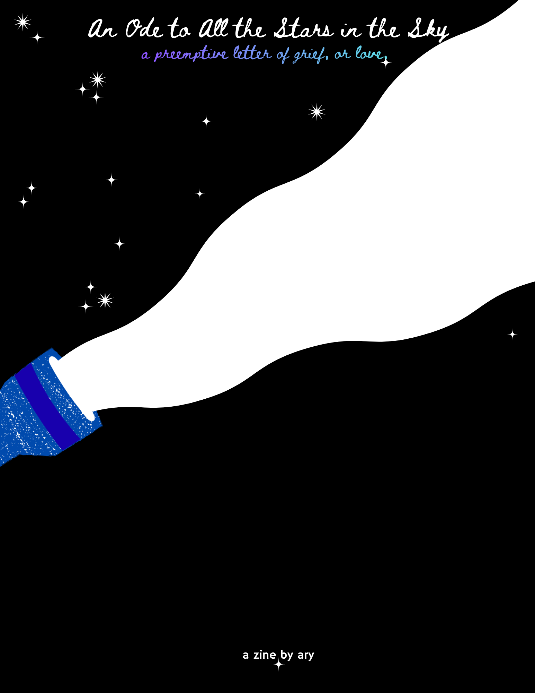
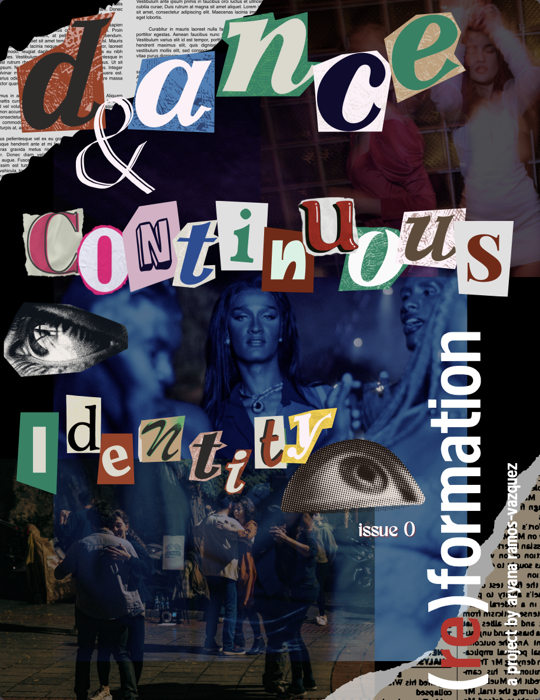

Under the direct mentorship of my PI, Rajit Manohar, I am developing a flexible on-chip toolkit for Dr. Hitten Zaveri's BioSense Lab at the Yale School of Medicine. I worked to develop a database of frequently used algorithms for preprocessing and extracting and selecting features from EEG data for brain-computer interfacing, which features an additional section focuses on epilepsy-specific use cases.
My thesis research centers on coding C implementations of the algorithms included in the BCI database, which will be used to validate and compare power requirements and timing with our hardware implementations of the algorithms.
In direct conversation with Dr. Liang Liang, I developed a research paradigm for investigating whether Thalamic Reticular Nucleus (TRN) dysfunction, precisely modulated via optogenetic stimulation, results in hallucinatory-like behavior in mice. I performed rodent neurosurgery to determine the stereotaxic coordinates for the relevant regions of the Thalamic Reticular Nucleus, conducted gel electrophoresis, brain extraction and slicing, and fluorescent imaging.

An Ode to All the Stars in the Sky; author
FALL '25 - Refugeturisms (Refugee Futurisms)

SPRING '25 - Embodied Methods: Lessons from Women of Color in Praxis